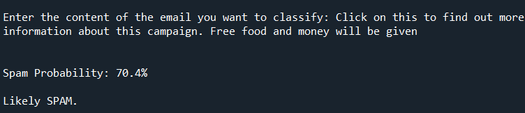
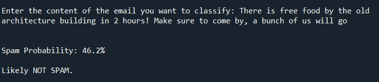

MACHINE LEARNING PROJECT: SPAM DETECTION USING CNB CLASSIFIER
KNOWLEDGE DOCUMENTATION FOR FUTURE SELF
Objective
The objective of this project is to develop a machine learning model that can effectively classify emails as spam or not spam. The model will use the Naive Bayes algorithm along with TF-IDF vectorization for feature extraction.
Method
- Text Preprocessing: The text data undergoes several preprocessing steps before being used for training and testing. These steps include converting all text to lowercase, removing special characters and punctuation, eliminating common English stop words, and removing hyperlinks.
- Data Loading and Cleaning: The dataset containing email data is loaded from the 'emails.csv' file. Any infinite values are replaced with NaN, and rows with missing elements are dropped to ensure data integrity and reliability.
- Data Splitting: The dataset is split into training and testing sets using a test size of 20%. This partitioning allows the model to be trained on one portion of the data and evaluated on another to assess its generalization capabilities.
- Feature Extraction: The text data is transformed into TF-IDF (Term Frequency-Inverse Document Frequency) vectors. This technique converts text into numerical representations, capturing the importance of each word in the context of the entire corpus.
- Training the Model: A Multinomial Naive Bayes classifier is chosen for its effectiveness in text classification tasks. The classifier is trained on the TF-IDF vectors of the training data.
- Model Evaluation: The trained model is evaluated using the test set to measure its performance. Classification metrics, such as precision, recall, and F1-score, are used to assess the model's accuracy in differentiating spam from non-spam emails.
Software
Python programming language and various libraries, including NumPy, Pandas, Scikit-learn, Regular Expressions (re), and TfidfVectorizer. Spyder was used as the python integrated development environment (IDE)
Limitations
- Threshold-based Classification: The current implementation relies on a fixed threshold value to classify an email as spam or not spam. Adjusting this threshold may impact the balance between false positives and false negatives.
- Model Sensitivity to Text Preprocessing: The accuracy of the Naive Bayes classifier may be affected by the chosen text preprocessing techniques. Different preprocessing methods might yield varying results.
- Limited Dataset: The performance of the model heavily depends on the quality and diversity of the training data. A limited dataset may lead to overfitting or underfitting issues.The dataset used tried to encompass as many phishing techniques as possible, while also ensuring that informal conversations were not marked as spam. A few instances of payment requests for Ubers, and meeting at certain times were incorporated.
- Dynamic Spam Patterns: As spammers continuously evolve their techniques, the model might not effectively capture emerging spam patterns.
- Email Content Complexity: The model's effectiveness may vary based on the complexity and structure of the email content. Some sophisticated spam emails may go undetected.This is why I chose a, 'paste the content of the email into the terminal' approach so that it would greatly simplify this problem of reading emails.
Example Runs


Both runs have keywords that could be either classification to test robustness, with different context